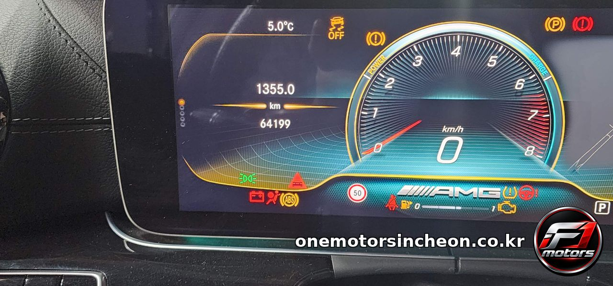
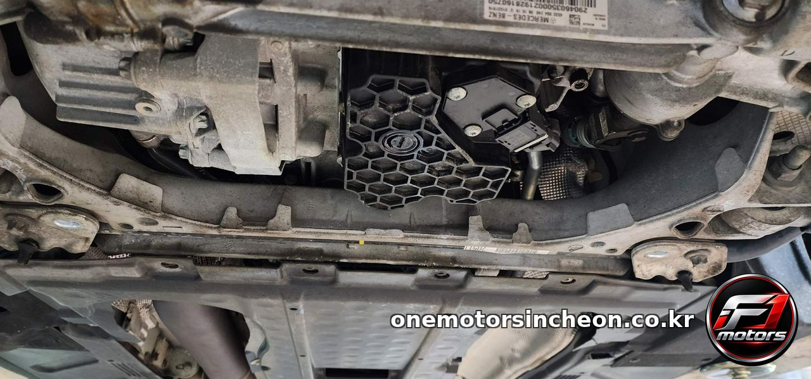
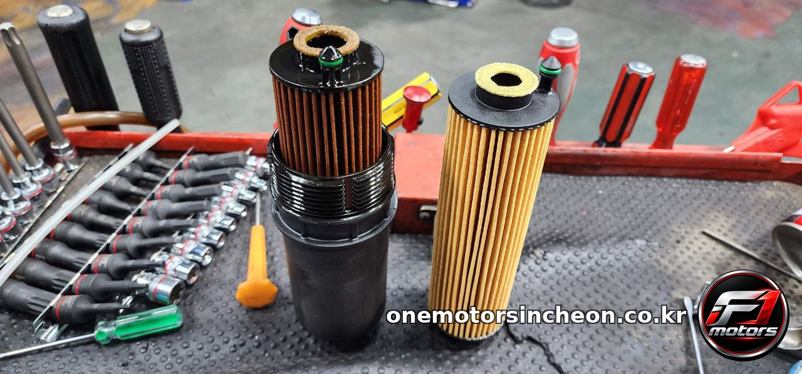
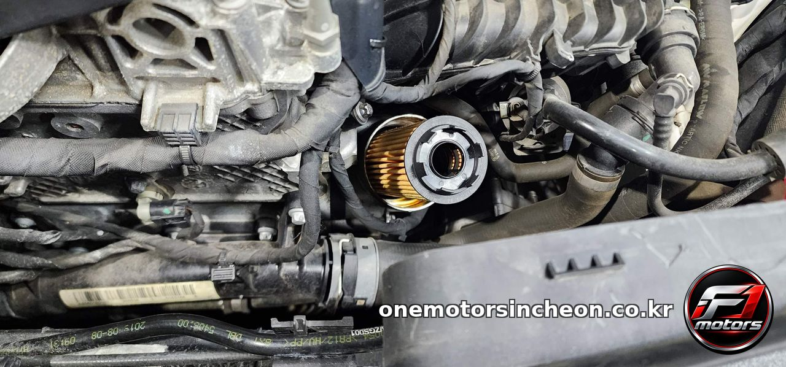
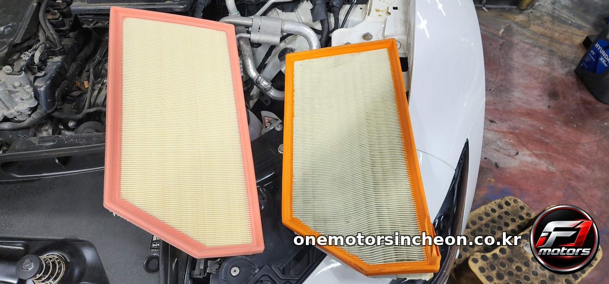
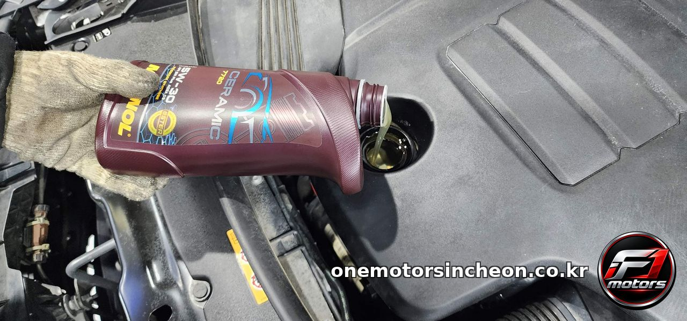

고장사례 및 검색 › 메르세데스-AMG GT 4도어 쿠페
메르세데스-AMG GT 4도어 쿠페 엔진오일 · 오일필터 교환과 좌 · 우 에어필터 동시 교환
- 차량
- 메르세데스-AMG GT 4도어 쿠페 · 64,199 km
- 증상
- 정기 소모품 교환으로 들어오셨습니다. 주행거리는 64,199 km였습니다
- 원인
- 소모품 교환은 바꾸는 일 자체보다 무엇을 기준으로 고르느냐가 먼저입니다. 같은 엔진오일이라도 고회전 가솔린 엔진이 받는 열과 전단 부담은 일반 승용과 다릅니다. 유막이 고온에서 버티는 성질과 점도 등급을 차에 맞춰 고르고, 규정량을 지켜 넣습니다.
이 차의 오일필터는 카트리지식입니다. 통째로 돌려 빼는 방식이 아니라 하우징 캡을 열고 속지만 갈아 끼웁니다. 떼어낸 것과 신품을 나란히 놓으면 색이 확연히 다릅니다. 캡을 열 때는 오링도 함께 봅니다. 오링이 굳어 있으면 조립 후 그 자리에서 기름이 번지기 때문입니다.
에어필터는 좌 · 우 두 개였습니다. V형 엔진이라 뱅크마다 하나씩 들어갑니다. 한쪽만 갈면 양쪽 흡기 저항이 달라지므로 둘 다 교환했습니다. 떼어낸 두 장 모두 신품과 비교하면 색이 어둡습니다.
주행거리 6만 km대는 숫자만 보면 아직 여유가 있어 보이지만, 오일과 필터는 거리보다 쓰인 조건이 더 중요합니다. 짧은 거리 반복, 공회전, 고회전 사용이 섞이면 거리에 비해 빨리 지칩니다. - 수리내역
- 입고 점검 · 주행거리 확인 · 엔진오일 배출 · 오일필터 하우징 캡 분리 — 카트리지 교환 · 하우징 캡 오링 교환 · 에어필터 좌 · 우 2개 교환 · 신유 규정량 주입 · 시동 후 누유 확인
- 교환부품
- 엔진오일 (에스테르계 100% 합성유 5W-30) · 오일필터 카트리지 · 오일필터 하우징 캡 오링 · 에어필터 좌 · 우 2개 · 드레인 와셔
정비 사진 10장










이런 증상으로 찾아오십니다
- AMG GT 4도어 엔진오일
- AMG GT 4도어 쿠페 소모품
- 벤츠 AMG 엔진오일 교환
- AMG 엔진오일 규격
- 고성능차 엔진오일
- 고회전 엔진 오일 선택
- 에스테르계 합성유
- 5W-30 합성유
- 유막 고온 안정성
- 카트리지식 오일필터 교환
- 오일필터 하우징 캡 오링
- 필터 갈고 나서 기름이 번져요
- 에어필터 두 개
- 좌우 에어필터 동시 교환
- V형 엔진 에어필터
- 에어필터 한쪽만 갈아도 되나요
- 흡기 저항 차이
- 6만km 엔진오일 교환
- 엔진오일 몇 km마다 갈아야 하나요
- 짧은 거리만 타는데 오일 교환 주기
- 공회전이 많으면 오일이 빨리 상하나요
- 수입차 엔진오일 어디서 교환하나요
- 순정 아니어도 괜찮나요
- 벤츠 소모품 교환
- AMG 정비 맡길 곳
- 인천 AMG 정비
- 인천 벤츠 엔진오일 교환
- 인천 수입차 경정비
- 제물포구 수입차 소모품
- 인천 송림동 수입차 정비소
- F1모터스
- 인천에프원모터스
비슷한 증상이 있으시면 전화로 상담해 주세요. 차종과 연식, 증상만 알려주시면 예상 원인을 안내해 드립니다.
인천에프원모터스는 제조사 공식 서비스센터가 아닌 독립 정비업체입니다. 정비 내용은 차량 상태에 따라 달라질 수 있습니다.